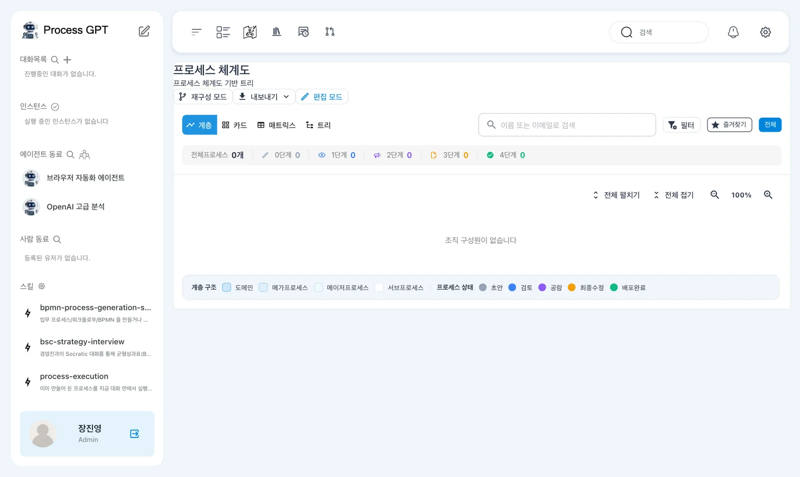
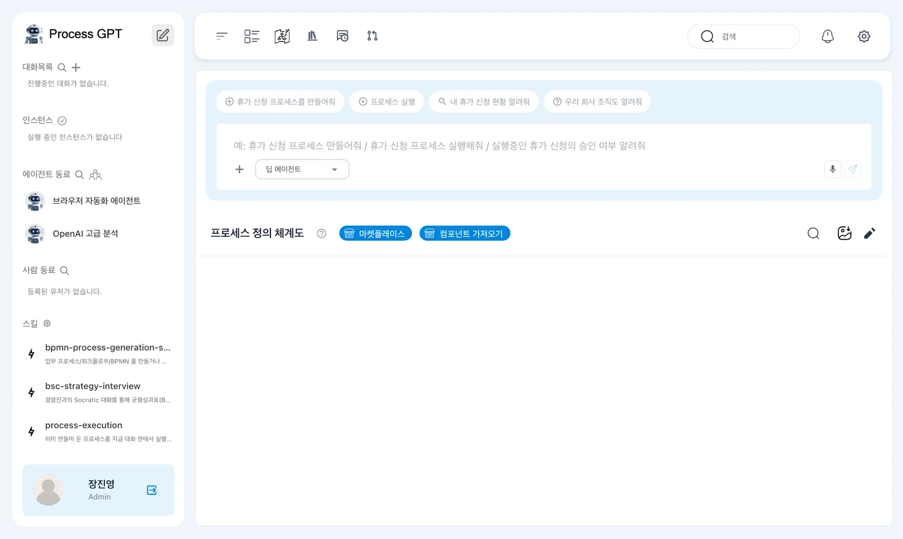
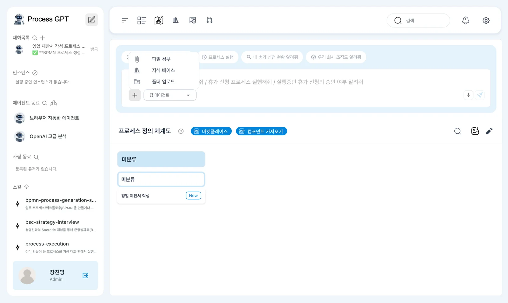
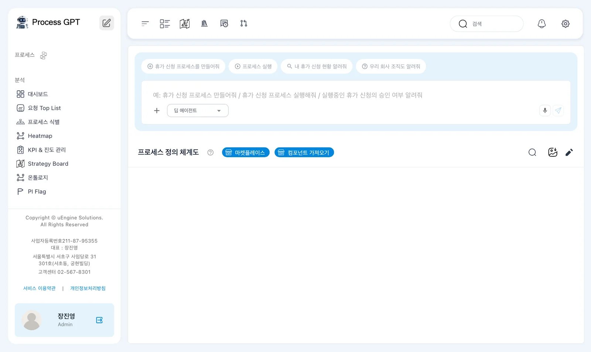
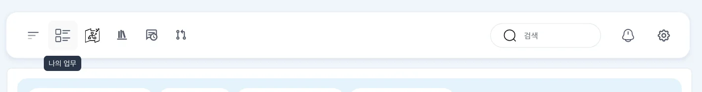
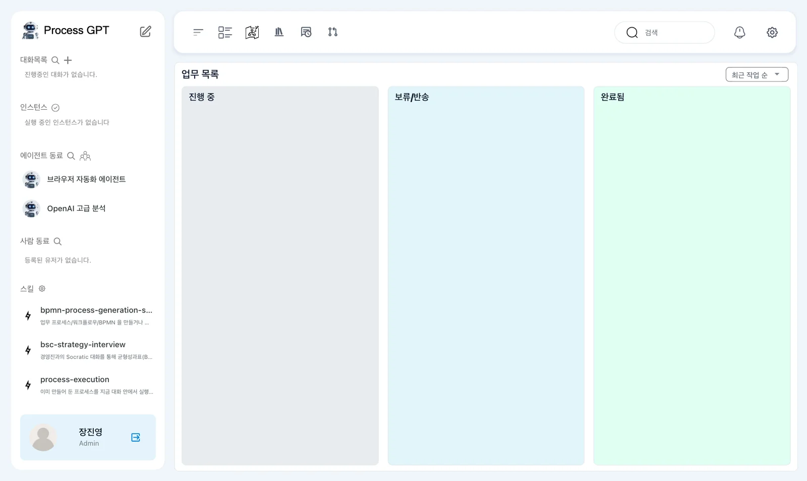
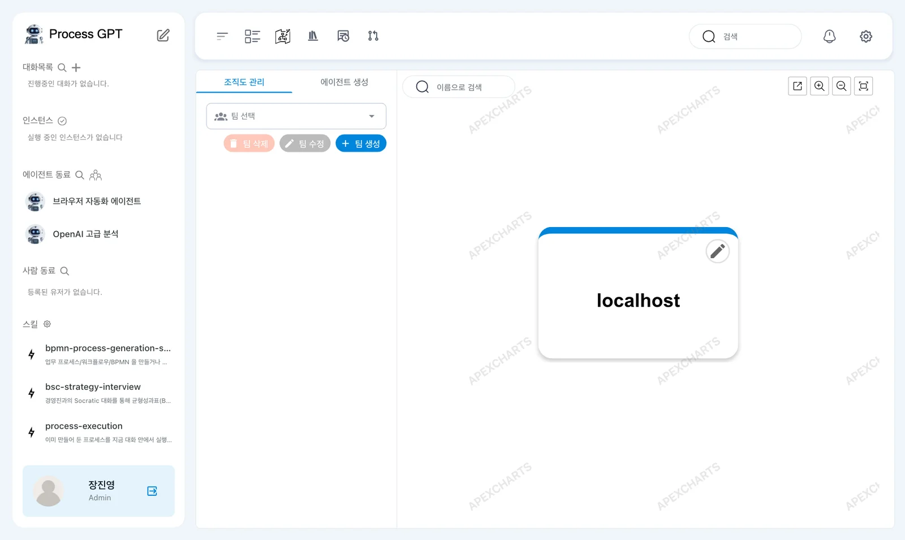
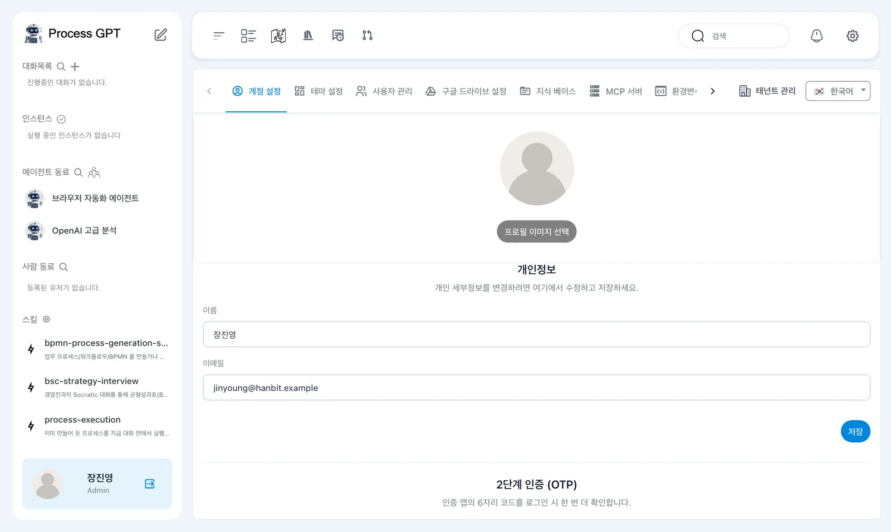

로그인하면 열리는 프로세스 체계도, 채팅 상자가 있는 홈, 왼쪽 사이드바, 위쪽 막대, 그리고 앞으로 자주 열 「나의 업무」·조직도·설정 화면을 한 바퀴 돌며 어디서 무엇을 하는지 익힙니다.
로그인하면 — 프로세스 체계도#
1장에서 가입하면 바로 프로세스 체계도가 열립니다. 회사의 프로세스를 도메인 › 메가 프로세스 › 메이저 프로세스 › 서브 프로세스의 계층으로 정리해 보여 주는 화면입니다. 위의 「계층 · 카드 · 매트릭스 · 트리」로 보는 방식을 바꾸고, 숫자 줄에서 프로세스가 어느 단계(0~4단계)에 있는지 셉니다. 아직 프로세스가 없으니 모두 0입니다.

홈 — 채팅 상자와 프로세스 정의 체계도#
사이드바 맨 위 「Process GPT」 오른쪽의 연필 아이콘을 누르면 이 튜토리얼에서 가장 자주 쓰는 화면이 열립니다. 위쪽에 채팅 상자, 아래쪽에 프로세스 정의 체계도가 있습니다. 이 튜토리얼에서 「홈」이라고 하면 이 화면입니다.

Process GPT의 일은 대부분 이 채팅 상자에서 시작합니다. 만들고 싶은 프로세스를 말로 설명하면 프로세스가 만들어지고(3장), 회사 문서를 붙여 물으면 그 문서를 근거로 답합니다(8장). 상자 위의 예시 문장(「휴가 신청 프로세스를 만들어줘」 등)을 누르면 그 문장이 입력됩니다.
| 상자 안의 단추 | 하는 일 |
|---|---|
| ＋ | 「파일 첨부」, 「지식 베이스」, 「폴더 업로드」 — 대화에 문서를 붙입니다 |
| 「딥 에이전트」 ▾ | 대화를 맡을 에이전트를 고릅니다. 「기본 에이전트」, 「딥 에이전트」, 「코덱스」가 있습니다 |
| 🎤 | 말로 입력합니다 |

프로세스 정의 체계도에는 만든 프로세스가 영역별로 쌓입니다. 새로 만든 프로세스는 먼저 「미분류」 아래에 들어갑니다. 「마켓플레이스」에서는 공유된 프로세스 템플릿을, 「컴포넌트 가져오기」로는 다른 곳에서 내보낸 프로세스를 가져옵니다(4장).
왼쪽 사이드바#
사이드바는 지금 진행 중인 것과 함께 일하는 동료를 보여 줍니다.
| 영역 | 보이는 것 | 머리의 아이콘 |
|---|---|---|
| 대화목록 | 지금까지의 대화방 | 🔍 찾기, ＋ 새 채팅방 |
| 인스턴스 | 실행 중인 프로세스 한 건 한 건 | ✓ 완료된 인스턴스 |
| 에이전트 동료 | AI 에이전트. 처음부터 「브라우저 자동화 에이전트」와 「OpenAI 고급 분석」이 있습니다 | 사람 모양 → 조직도 및 에이전트 관리 |
| 사람 동료 | 같은 회사의 사람 | 🔍 찾기 |
| 스킬 | 에이전트가 쓰는 스킬. 처음부터 프로세스 만들기(bpmn-process-generation-skill), 전략 인터뷰(bsc-strategy-interview), 프로세스 실행(process-execution)이 있습니다 |
⚙ 스킬 관리 |
| 프로세스 | 프로세스 정의 바로가기 | |
| 분석 | 대시보드, 요청 Top List, 프로세스 식별, Heatmap, KPI & 진도 관리, Strategy Board, 온톨로지, PI Flag |

인스턴스라는 말이 앞으로 자주 나옵니다. 프로세스 정의가 설계도라면, 인스턴스는 그 설계도대로 실제로 진행되는 한 건입니다. 「영업 제안서 작성」 프로세스는 하나지만, 고객 요청이 올 때마다 인스턴스가 하나씩 생깁니다.
위쪽 막대#

| 아이콘 | 이름 | 하는 일 |
|---|---|---|
| ☰ | 사이드바 접기/펼치기 | 화면을 넓게 씁니다 |
| 목록 모양 | 나의 업무 | 내게 온 할 일을 봅니다 |
| 지도 모양 | Strategy Board | 회사 전략과 프로세스를 잇는 화면 |
| 책 모양 | 지식 베이스 | 회사 문서 모음(8장) |
| 말풍선 모양 | 내 피드백 | 내가 남긴 피드백 |
| 갈래 모양 | 병합 요청함 | 프로세스·스킬 변경 요청 검토 |
| 🔍 · 🔔 · ⚙ | 검색 · 알림 · 설정 |
나의 업무#
「나의 업무」는 내게 배정된 할 일을 진행 중 · 보류/반송 · 완료됨 세 칸으로 보여 줍니다. 프로세스를 실행하면 단계마다 담당자에게 할 일이 생기고, 그 할 일이 여기에 카드로 나타납니다.

조직도#
사이드바 「에이전트 동료」 옆의 사람 모양 아이콘을 누르면 조직도가 열립니다. 왼쪽 「조직도 관리」에서 팀을 만들고 팀원을 넣으면 오른쪽 그림에 나타나고, 「에이전트 생성」에서는 AI 에이전트 동료를 만듭니다(9장). 지금은 회사(테넌트) 이름 localhost 하나만 있습니다.

설정#
위쪽 막대의 ⚙을 누르면 설정이 열립니다. 이 튜토리얼에서 쓰는 탭은 다음과 같습니다(18장).
| 탭 | 하는 일 |
|---|---|
| 계정 설정 | 이름·사진, 2단계 인증 |
| 사용자 관리 | 같은 회사 사람 관리 |
| 지식 베이스 · MCP 서버 · 환경변수 | 에이전트가 쓰는 문서·도구·설정 |
| 테넌트 관리 | 회사(테넌트) 정보 |
| 한국어 ▾ | 화면 언어 |

따라 하기 — 한 바퀴 돌기#
- 로그인하면 열리는 프로세스 체계도에서 「카드」, 「트리」를 눌러 보는 방식이 바뀌는지 봅니다.
- 사이드바 맨 위 연필 아이콘으로 홈을 엽니다. 채팅 상자의 「딥 에이전트」 ▾를 눌러 에이전트 세 가지를 확인하고, ＋를 눌러 메뉴를 봅니다. 아무것도 보내지는 않습니다.
- 위쪽 막대의 「나의 업무」를 눌러 세 칸이 모두 비어 있는지 봅니다.
- 사이드바 「에이전트 동료」 옆 사람 모양 아이콘으로 조직도를 엽니다.
- ⚙ 설정을 열어 탭 이름을 훑어봅니다.
다음 장으로#
화면을 익혔으니 다음 장에서는 홈의 채팅 상자로 첫 프로세스 「영업 제안서 작성」을 만듭니다(3장).
확인 문제
- 프로세스 정의와 인스턴스는 어떻게 다른가요?
- 채팅 상자에 회사 문서를 붙이려면 어디를 누르나요?
- 프로세스를 실행했을 때 내게 온 할 일은 어디서 보나요?
답
- 정의는 단계·담당·폼을 적은 설계도이고, 인스턴스는 그 설계도대로 실제로 진행되는 한 건입니다. 정의 하나로 인스턴스를 여러 건 실행합니다.
- 채팅 상자의 ＋를 누르고 「파일 첨부」(내 컴퓨터의 파일), 「지식 베이스」(올려 둔 회사 문서), 「폴더 업로드」 중에서 고릅니다.
- 위쪽 막대의 「나의 업무」입니다. 진행 중 · 보류/반송 · 완료됨 칸으로 나뉩니다.